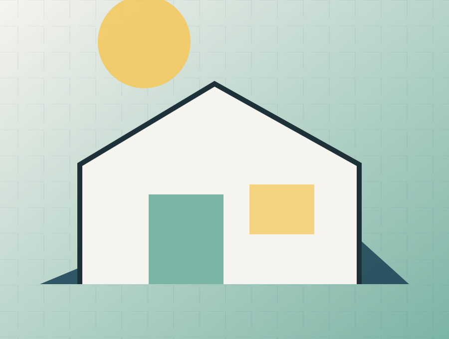

Hero
Látványkép és stíluselem (pl. Scandinavian design). Cím: "[Ház neve] – [Stílus]". Alcím: "Gyorsan épülő, természetes, energiatakarékos favázas otthon". Kiemelt adatok: alapterület, szobaszám, kivitelezési idő, ár. CTA: "Árajánlatot kérek".
Gyors, világos és energiahatékony skandináv favázas otthonteremtés. A típusház termékoldal célja, hogy a látogató egyértelmű szempontokkal jusson el a következő megalapozott döntésig.
Nem érdemes másból építeni.
Drive-forráshoz igazított tesztoldal · publikálás nélkül
Gyors, világos és energiahatékony skandináv favázas otthonteremtés.
Látványkép és stíluselem (pl. Scandinavian design). Cím: "[Ház neve] – [Stílus]". Alcím: "Gyorsan épülő, természetes, energiatakarékos favázas otthon". Kiemelt adatok: alapterület, szobaszám, kivitelezési idő, ár. CTA: "Árajánlatot kérek".
Rövid történet arról, milyen ebben a házban élni (hygge, természetközeli, nyugalom).
Infografika: Tervezés → Gyártás → Szállítás → Összeszerelés → Kulcsátadás. Mindegyiknél 1–2 mondat.
Leírás a favázas szerkezet előnyeiről (gyors kivitelezés, magas energiahatékonyság, jó belső klíma). Külön pont, hogy a falak hőszigetelése és rétegrendje, a tető, a nyílászárók, etc.
Szerkezetkész, Fűtéskész, Kulcsrakész, All In. Mindegyik kártyán belül, mi tartozik bele.
Rövid leírás: CSOK, hitel, önerő, és hogy a gyors kivitelezés miatt kevesebb a kamatköltség. CTA: "Finanszírozási konzultáció".
2–3 dán stílusú referencia (pl. Balatonrendes, Nyársapát, Tápiószentmárton, Kőszegdoroszló). Fotók, helyszín, alapterület, kivitelezési idő, ügyfélvélemény.
Folyamatábra bővebben, a hygge élmény kiemelése: egyszerű, könnyű, vidám folyamat; "Egy kis hygge a házépítésben".
Név, telefonszám, email, település, van‑e telek, van‑e terv, stílus választása, üzenet. CTA: "Elküldöm az ajánlatkérést".
A preview nem küld adatot és nem tesz ajánlatot. Ár, határidő, garancia vagy szerződéses vállalás csak jóváhagyott evidence- és ajánlati rekord alapján jelenhet meg élesben.